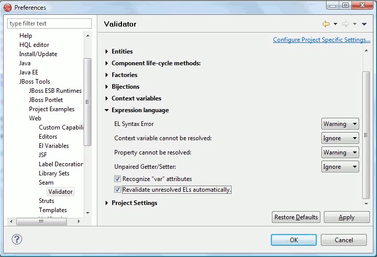

< Main Index JST/JSF Tools News >
Validation |
|
|
Speed improvements |
We improved the incremental validation for xhtml pages, so validation no longer take long periods. We also added a setting allowing you to disable the incremental validation in case your project is still having issues.  |
|
|
|